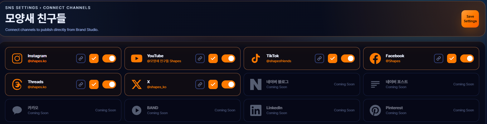
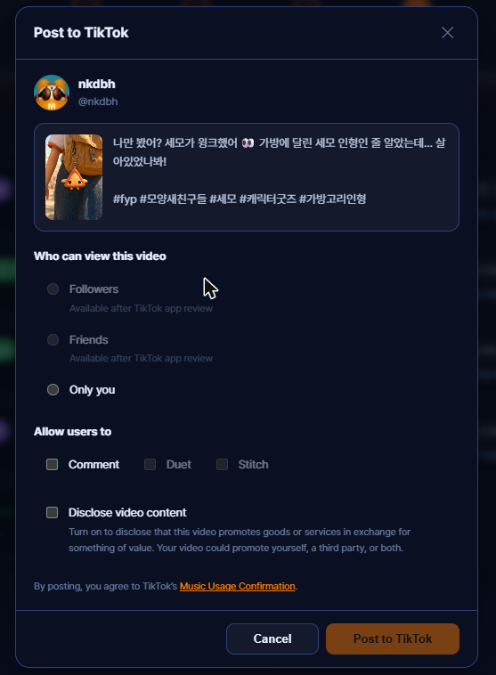
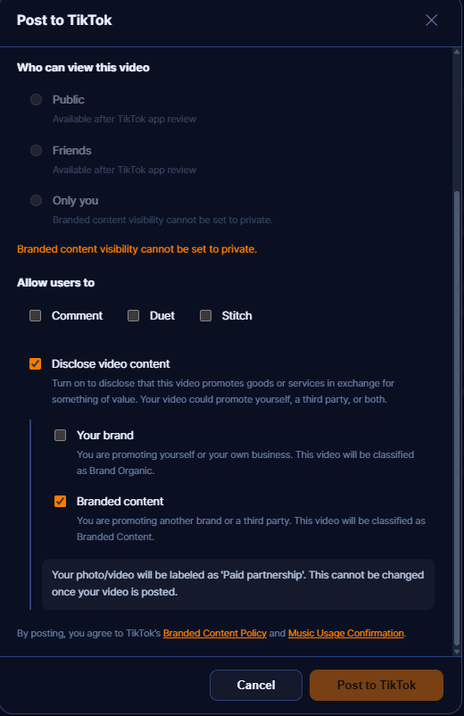
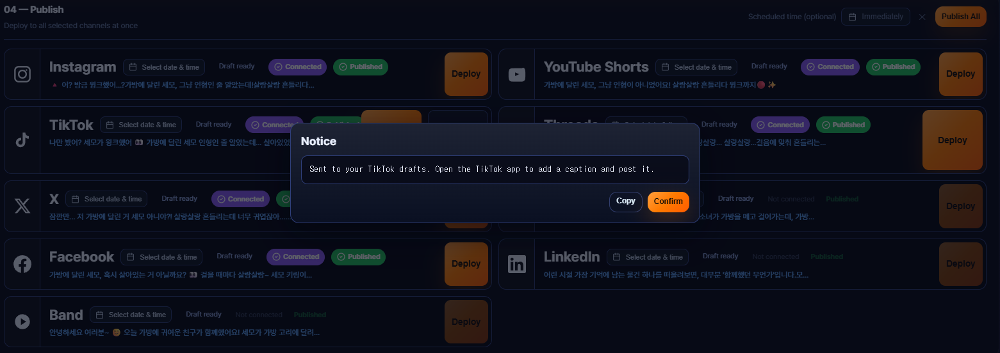

TikTok Integration
1What NK AI Studio is
NK AI Studio is a web-based content production and brand management platform for individual creators and small brand owners. It runs entirely in the browser at nkstudio.org.
Inside the editor a user plans a campaign, generates the script, images, video and voice-over with AI, and reviews the finished asset. Only after the user explicitly approves that exact asset on screen is it published to the user's own connected social accounts. After publishing, the user can see how each post performed and use that to plan the next one.
TikTok is one of the supported destinations, alongside YouTube, Instagram, Facebook, Threads and X. Connecting a TikTok account is entirely optional — the rest of the product works without it.
2How the TikTok integration works
Four steps, in this order. Every step that touches TikTok is shown below with a screenshot of the actual product UI.
https://nkstudio.org/auth/tiktok/callback. We then call TikTok's user info endpoint exactly once and read only open_id, display_name and avatar_url, so the connected account name and picture are visible on the screen from that point on.

creator_info endpoint and build a confirmation dialog from the response. In that dialog the user sees the creator nickname and a preview of the media and caption, and must:
- choose who can view this video from the privacy levels the account allows — no option is pre-selected, and the Post button stays disabled until one is chosen;
- set the Comment / Duet / Stitch toggles, with any interaction the creator has disabled shown as unavailable;
- declare whether the post is commercial content — "Your brand" and/or "Branded content" — and confirm the resulting "Promotional content" / "Paid partnership" label, next to links to TikTok's Branded Content Policy and Music Usage Confirmation.


video.upload, and they write the caption and choose the audience inside the TikTok app. Nothing is posted in that case — the file simply waits in their drafts.

3Permissions we request
We request three scopes. We do not request video.list or any other Display API scope, so we never read your existing TikTok videos.
| Scope | What we access | Why | What we store |
|---|---|---|---|
user.info.basicLogin Kit |
A single call to the user info endpoint immediately after the OAuth token exchange, requesting only open_id, display_name, avatar_url. We do not request username, because that field belongs to user.info.profile, a scope we do not ask for. |
display_name and avatar_url are shown on the SNS Connections screen and again in the publish confirmation dialog, so that before approving a post the user can visually confirm which TikTok account the content will be sent to. Our users often manage more than one brand account. open_id is the internal key that binds the stored token to the correct account. |
open_id, display_name, avatar_url, and the access/refresh tokens. Nothing else — no followers, following, likes or bio. |
video.publishContent Posting API — Direct Post |
creator_info/query for the creator nickname, allowed privacy levels, max duration and comment/duet/stitch availability; then video/init or content/init to send the approved post; then status/fetch to follow its progress. |
This is the core feature of the product and the reason we integrate with TikTok at all: publishing the asset the user created and approved inside NK AI Studio to their own TikTok account, with the audience and disclosure settings they chose on screen. | The returned publish_id and the resulting post id and URL, so the user can open their own post from our interface. |
video.uploadContent Posting API — Upload to drafts |
inbox/video/init to open an upload session, the returned upload URL to transfer the file, then status/fetch to confirm it reached the user's inbox. |
For users who want to review the video one last time inside TikTok, or write the caption there, we upload only the file to their TikTok drafts. No caption, audience or disclosure is sent — the user completes the post in the TikTok app. This is a deliberate alternative to Direct Post, not a background upload: it runs only when the user presses Send to drafts. | The returned publish_id only, so we can report whether the transfer finished. |
Media delivery: videos are sent with FILE_UPLOAD — our server reads the file from the user's private storage and uploads it straight to TikTok, so the video is never exposed on a public URL. Photo posts must use PULL_FROM_URL, which requires a verified domain, so those images are served through https://nkstudio.org/api/sns/tiktok-media, a proxy on our own verified domain that streams the user's file only when accompanied by a short-lived HMAC-SHA256 signed token generated at publish time.
privacy_level to SELF_ONLY regardless of what the user selects, so that no post created through our app can become publicly visible before review is complete.
4What we never do
- No automatic or unattended posting. There is no scheduler, no bulk poster and no bot. Every post passes through the confirmation dialog described above.
- No exposure to other users. One user's TikTok data is never shown to any other NK AI Studio user, and never aggregated across accounts.
- No selling and no model training. TikTok data is never sold, never used for advertising, and never used to train any AI model.
- No re-hosting of TikTok videos. We store metrics and links only. Video files stay on TikTok, and thumbnails and embed links send traffic back there.
- No use of TikTok as a login provider. Users sign in to NK AI Studio with their own NK AI Studio account. TikTok authorization is used solely to establish the publishing connection.
- No posting of content the user has not seen. The media is content the user created inside NK AI Studio and approved on screen.
5Data retention & deletion
- All TikTok data is scoped to the single NK AI Studio user who authorized it.
- Tokens and TikTok data are kept in a private per-user object in Google Cloud Storage, encrypted at rest. Access tokens are refreshed through TikTok's token endpoint using the refresh token.
- Disconnecting: the user can disconnect TikTok at any time from Settings > SNS Connections. This immediately deletes the stored tokens and all cached TikTok data.
- Account deletion: deleting the NK AI Studio account deletes everything, including all TikTok tokens and cached metrics.
- You may also request deletion by email at any time — see the contact section below.
Full details are in our Privacy Policy and Terms of Service.